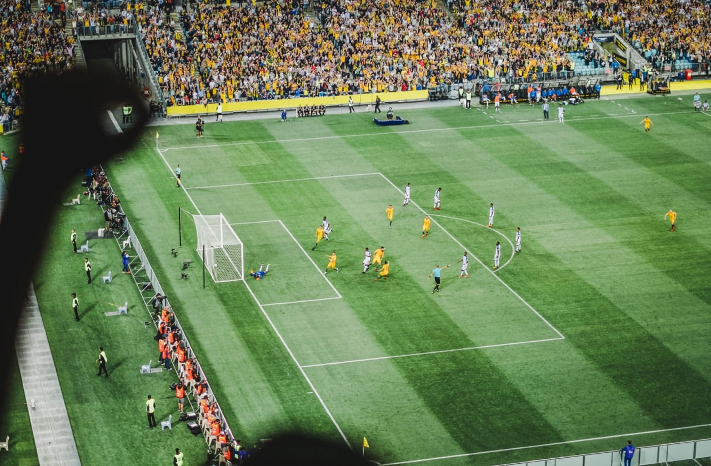

Japan House opens in mountainside to foster peak creativity.
Enim omittam qui id, ex quo atqui dictas complectitur. Nec ad timeam accusata, hinc justo falli id eum, ferri novum molestie eos cu.
BY Reta Torphy
Helmut Lang celebrates taxi drivers worldwide in latest campaign
BY Annie Lueilwitz

Bowlcut launch a new summer collection that pays homage to “UK legends”
BY Rosanna Ondricka
Thousands of previously unseen photographs by Andy Warhol will be made public this Autumn
BY Annie Lueilwitz

London-based Yinka Ilori's storytelling furniture
BY Annie Lueilwitz

Anonymous Israeli art collective Broken Fingaz direct music video for U2 and Beck
BY Simeon Brekke

Suzanne Saroff's meticulously arranged photographs alter perceptions
BY Reta Torphy
Japan House opens in mountainside to foster peak creativity.
BY Reta Torphy
Helmut Lang celebrates taxi drivers worldwide in latest campaign
BY Alessandra Ortiz
Bowlcut launch a new summer collection that pays homage to “UK legends”
BY Rosanna Ondricka
Thousands of previously unseen photographs by Andy Warhol will be made public this Autumn
by Annie Lueilwitz
London-based Yinka Ilori's storytelling furniture
BY Annie Lueilwitz
Anonymous Israeli art collective Broken Fingaz direct music video for U2 and Beck
BY Simeon Brekke
Suzanne Saroff's meticulously arranged photographs alter perceptions
BY Reta Torphy

Anu Ambasna's playful illustrations celebrate club culture, brown bodies and perfect paunches
BY Leo Bartell

A Brief History of the FIFA World Cup Logo
BY Clem Onojeghuo

Need a guide to LA's graphic design scene? Shoplifters’ new issue has got your back
BY Alessandra Ortiz

Fred Rowson directs film for Years and Years
BY Coby Gottlieb
M&C Saatchi and Fontsmith collaborate on font collection for House of St Barnabas
BY Annie Lueilwitz